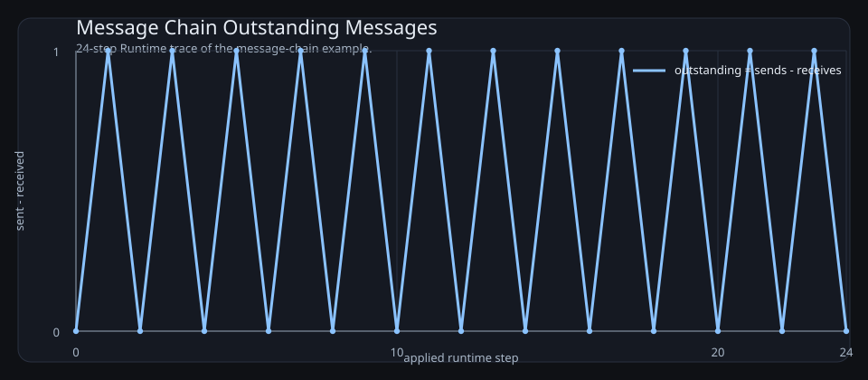
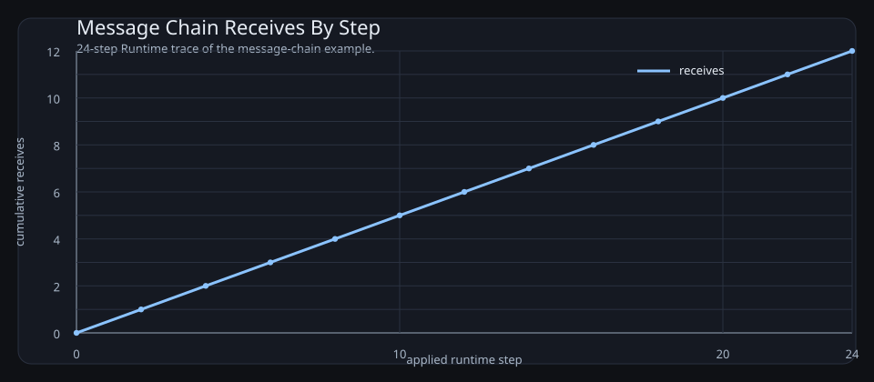
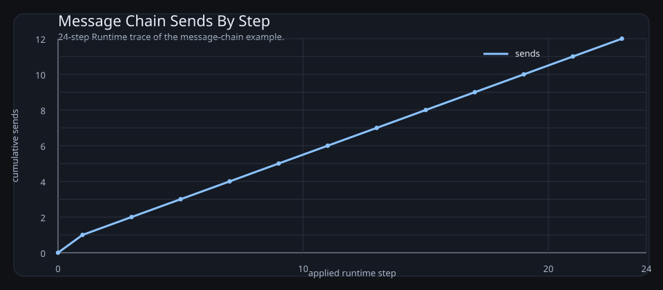
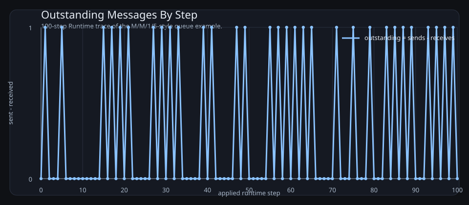

2026-03-22
This document records the current design intent for the actor IR, the declared control graph, the CTL checking model, the metric/event pipeline, and the documentation build. The target user is someone who can inspect diagrams and predicates, but does not want to learn a large formal language before getting value.
The central idea is:
The design goal is not to infer hidden control flow from simulation alone. Instead, transitions expose control flow through explicit become calls, and the compiler walks those action trees to recover possible successor control states.
This repository is for readers who want the benefits of temporal logic and executable models without first committing to a large bespoke specification language.
The intended workflow is:
The important constraint is inspectability. The user should be able to reject a bad model by reading the states, guards, transitions, predicates, and generated diagrams.
The exact information an LLM needs to author models is also the information a human reviewer needs. The documentation therefore includes the literal authoring prompt plus a generated reference for every core form, guard, action, value helper, and branching-time logic form:
Write a go-ctl2 model as Lisp.
Use exactly one top-level (model ...).
Declare reusable behavior with (actor RoleName ...).
Declare runtime actors explicitly with (instance Name Role (PeerRole Target...)...).
There is no implicit actor creation.
Every send target is written as a peer role in the actor definition and must resolve through the instance bindings.
Use (send Role msg) only when that role resolves to exactly one concrete actor.
Use (send-any Role msg) when a role may resolve to several concrete actors.
State is actor-local. The only cross-actor effect is messaging.
Each transition is (edge guard action...) inside a declared (state ...).
Every edge must eventually reach at least one (become State).
Use (recv var) to consume a message. recv also writes the sender name into local variable sender.
Use quoted literals for structured messages, for example '(message (type ping)).
Keep control flow explicit with named states and become transitions.
Put CTL requirements in (assert ...).
Use only the builtins and forms documented below.| Form | Parameters | Operational Semantics |
|---|---|---|
(model item...) |
item := actor | instance | assert | xyplot |
Top-level container. No actors are created implicitly. |
(actor RoleName item...) |
item := data | state |
Declares a reusable actor-role template. |
(data key value) |
key symbol, value literal/value form |
Introduces actor-local data with an initial value. |
(state Name edge...) |
Name symbol |
Declares a named control state. The first declared state is the initial control location. |
(edge guard action...) |
guard guard form |
Declares one guarded atomic transition. At least one reachable become is required. |
(instance Name Role (PeerRole Target...)...) |
Target... concrete actor names |
Creates one runtime actor and binds each referenced peer role to one or more concrete instances. |
(assert ctl-formula) |
CTL formula | Adds a branching-time requirement checked over the explored model. |
(xyplot name (title s) (steps n) (metric m)) |
metric := send-count | receive-count | sent-minus-received |
Requests a runtime-derived plot for the model example. |
| Form | Parameters | Operational Semantics |
|---|---|---|
true |
none | Always enabled. |
(mailbox msg) |
msg message literal/value |
True when the actor mailbox currently contains a matching message. |
(data= key value) |
key local variable, value literal/value form |
True when the actor-local value equals the resolved right-hand side. |
(data> key value) |
numeric comparison | True when the actor-local numeric value is greater than the resolved right-hand side. |
(dice-range lo hi) |
floating-point bounds | True when the sampled Dice value satisfies lo ≤ Dice < hi. |
(dice< x) |
floating-point threshold | True when Dice < x. |
(dice>= x) |
floating-point threshold | True when Dice ≥ x. |
(dice) |
none | Resolves to the sampled floating-point value in [0,1]. |
(and g...), (or g...), (not g), (implies p q) |
guard forms | Boolean composition over guard predicates. |
| Form | Parameters | Operational Semantics |
|---|---|---|
(send Role msg) |
Role peer role with exactly one bound target |
Sends msg to the single bound instance. Compile-time error if the role resolves to multiple instances. |
(send-any Role msg) |
Role peer role with one or more bound targets |
Sends to the first ready concrete target in that role set. |
(recv var) |
var local name |
Consumes one incoming message into var and also writes the sending actor name into local sender. |
(become State) |
State declared control state |
Moves the actor into the next control location. |
(set key value) |
local name and value form | Stores the resolved value into actor-local data. |
(add key delta), (sub key delta) |
numeric local name and numeric value form | Applies integer arithmetic to actor-local data. |
(if guard then [else]) |
guard and action blocks | Conditional action execution inside an atomic transition. |
(do action...) |
action list | Explicit sequencing when a nested action block is needed. |
(def name (p...) body) |
actor-local pure helper | Defines a value-level helper callable from set, send, and other value positions. |
(md5 out source) |
destination variable and value form | Computes the MD5 digest of the resolved value and stores its hex string. |
(rsa-raw out modulus exponent message) |
numeric value forms | Computes raw modular exponentiation message^exponent mod modulus and stores the numeric result. |
(cryptorandom out bytes) |
destination variable and byte count | Generates cryptographic randomness and stores a hex string. |
(sample-exponential out rate) |
destination variable and positive rate | Samples an exponential variate and stores the floating-point value. |
| Form | Parameters | Operational Semantics |
|---|---|---|
| symbols | local variable names | Resolve to actor-local data when present; otherwise remain symbols. |
'x, '(a b) |
quoted literal | Prevents evaluation and injects a literal symbol/list value. |
(cons a b) |
value forms | Prepends a onto list b. |
(car xs) |
list value form | Returns the first list element, or invalid/empty when absent. |
(cdr xs) |
list value form | Returns the tail of a list. |
| Form | Parameters | Operational Semantics |
|---|---|---|
(in-state A s) |
actor and state | Atomic predicate A.state = s. |
(data= A key value) |
actor, local name, value | Atomic predicate over actor-local data. |
(mailbox-has A msg) |
actor and message | Atomic predicate over queued messages. |
(ex p), (ax p) |
CTL formula | Next-step possibility and necessity. |
(ef p), (af p) |
CTL formula | Future possibility and inevitability. |
(eg p), (ag p) |
CTL formula | Existential and universal invariance. |
(eu p q), (au p q) |
CTL formulas | Existential and universal until. |
(not p), (and p q), (or p q), (implies p q) |
CTL formulas | Boolean composition over CTL formulas. |
| Form | Parameters | Operational Semantics |
|---|---|---|
true, false |
none | Boolean constants for the raw modal μ-calculus layer. |
(diamond p), (box p) |
μ-calculus formula | Existential and universal next-step modalities. |
(mu X body), (nu X body) |
fixpoint variable and body | Least and greatest fixpoints. |
(not p), (and p q), (or p q) |
μ-calculus formulas | Boolean composition over formulas. |
(in-state A s), (data= A key value), (mailbox-has A msg) |
same atoms as CTL | State predicates shared with the CTL surface syntax. |
The document uses the following terms consistently:
(actor RoleName ...)becomeAn actor role has:
Each runtime actor is created explicitly with (instance ActorName RoleName (PeerRole InstanceName...)...). Each actor owns its own state. Messages do not mutate the actor directly; they accumulate in the mailbox until the actor reaches a receive-ready transition.
A state is a named control location. For compiled models, the control location is explicit, not inferred from guard overlap.
A state contains transitions. A transition is selectable only if:
A transition contains:
Example:
(edge true
(recv msg)
(become got-ping))The compiler walks the action block, collects reachable become targets, and uses that successor set for graph construction and CTL. Runtime execution validates that the post-step control state is one of those derived successor states.
An edge must contain at least one become. Omitting become is a compile error; the language does not use implicit self-loops.
The compiler also walks the action block for communication operations. If send or recv appear later in the body, the compiler inserts internal wait substates such as wait__0, wait__1, and rewrites the edge into a chain of explicit control states where each communication step appears at the front of its compiled substate. That keeps the user-facing source compact while still giving the runtime and the proof layer a clean explicit control graph.
The central compromise in this repository is that transitions still expose successor control states structurally through become, rather than leaving control flow hidden in simulation traces.
That buys several things immediately:
It does not remove the need for correct modeling. A wrong become structure can still make the proof layer wrong. The point is that the control-flow obligation remains visible and reviewable.
The scheduler is single-threaded but concurrent in effect. At each step:
Dice value in [0,1]If the chosen actor has no ready transition, it yields. This is not deadlock. Deadlock means no actor in the whole runtime has any ready transition.
Each actor mailbox can be treated as a bounded or unbounded queue.
recv is ready if a matching message is presentsend is ready if the target mailbox has spacesend-any is ready if any filled target mailbox has spaceA mailbox capacity of 0 means synchronous rendezvous semantics.
send is ready only if the receiver has a matching ready recvsend-any is ready only if at least one filled receiver has a matching ready recvrecv is ready only if a sender is ready to rendezvousThe runtime currently models this by checking receiver readiness before a zero-capacity send is allowed to execute.
On a successful recv, the payload is stored in the declared variable and the local variable sender is also set to the sending actor name. That gives the receiver a built-in return address.
Before attempting a step, the runtime samples a floating-point value called Dice in [0,1].
That value can be used in guards to express random branching, for example:
(edge (dice-range 0.0 0.5 "route to branch a")
(become a))
(edge (dice-range 0.5 1.0 "route to branch b")
(become b))This is enough to express:
Full M/M/1/5-style example:
(model
(actor ClientRole
(state loop
(edge (dice-range 0.0 0.5)
(set last "sleep")
(become loop))
(edge (dice-range 0.5 1.0)
(send QueueRole req)
(set last "arrival")
(become loop))))
(actor QueueRole
(state wait
(edge (and (mailbox req) (data= count 0))
(recv msg)
(add count 1)
(set elapsed 0)
(become wait))
(edge (and (mailbox req) (data> count 0) (not (data= count 5)))
(recv msg)
(add count 1)
(become wait))
(edge (and (mailbox req) (data= count 5))
(recv dropped)
(add dropped_count 1)
(become wait))
(edge (and (data> count 0) (dice-range 0.0 0.5))
(sub count 1)
(set last_departure "service-complete")
(become wait))
(edge (and (data> count 0) (dice-range 0.5 1.0))
(set last_departure "busy")
(become wait))))
(instance Client ClientRole (QueueRole Queue))
(instance Queue QueueRole)
(xyplot outstanding
(title "Outstanding Messages By Step")
(steps 100)
(metric sent-minus-received)))Interpretation:
Client models arrivals dice-range makes the sleep/arrival split explicitQueue models a single-server queue with capacity 5 count is the current system size and dropped_count records blocked arrivalscount > 0, dice-range decides whether service completes on that stepcount = 5 branch is the finite-capacity part arrivals are consumed and recorded as drops instead of increasing the queuebecome the example does not rely on implicit stay-in-place behaviorxyplot declaration says which runtime-derived chart should be rendered for this modelThis is not a continuous-time simulator. It is a small executable control model that captures the same queueing shape:
5That is usually enough for inspectable CTL properties such as:
Representative predicates for this queue model:
(ef (data> Queue count 0) "eventually the queue can become non-empty")(ef (data= Queue count 5) "the finite-capacity queue can saturate")(ef (data> Queue dropped_count 0) "some execution can observe blocked arrivals")(ag (implies (data= Queue count 0) (not (data> Queue dropped_count 0))) "drops only occur after the system has filled at some earlier point")The Mermaid artifacts below are a useful companion view for this example:

When the only source of branching is Dice, the operational picture is close to a Markov-chain style model.
When both of these are present:
Dice-driven branching inside actor guardsthe operational picture is closer to a decision process: some choices are external or controlled, and some are probabilistic.
That is the important mixed case for systems such as:
The current unit tests include both:
dice-rangeCommunication is part of transition readiness. There is no partial transition semantics.
That means:
recv is not ready, the transition is not enabledsend is not ready, the transition is not enabledThis makes an atomic transition a real scheduler unit.
The compiler normalizes communication-heavy bodies into explicit wait substates.
At the source level, the user can write local work and communication in one edge body. At the compiled level, the actor is split so that each send or recv sits at the front of a generated substate transition, with explicit become hops connecting the pieces.
Conceptually, something like this:
(edge true
(set before 1)
(send B ping)
(set after 1)
(become done))becomes an internal shape more like:
(edge true
(set before 1)
(become start__wait))
(state start__wait
(edge true
(send B ping)
(set after 1)
(become done)))That removes a lot of source-language noise while preserving explicit compiled control flow.
This repository treats a transition firing as a state change even when the actor remains in the same named control state. In other words:
The graph used by execution and model checking is therefore over full runtime states, while the derived control graph remains the human-facing skeleton.
The intended structured control tools are:
becomeifbecomeThis is closer to a small structured machine IR than to an arbitrary scripting language.
CTL needs an exact successor relation. In this design, the successor relation is derived from become calls in each transition body.
Runtime execution exists to validate that:
This means CTL does not need to wait for simulation to discover the control graph.
CTL is Computation Tree Logic, and the implementation lowers it into the modal μ-calculus.
The explored graph is a transition system with runtime states S and successor relation → ⊆ S × S. We write s ⊨ φ when state s satisfies formula φ.
The mathematical reading is:
EX p means ∃t. s → t ∧ t ⊨ pAX p means ∀t. s → t ⇒ t ⊨ pEF p means μX.(p ∨ ◇X)AF p means μX.(p ∨ □X)EG p means νX.(p ∧ ◇X)AG p means νX.(p ∧ □X)E[p U q] means μX.(q ∨ (p ∧ ◇X))A[p U q] means μX.(q ∨ (p ∧ □X))So the user-facing CTL layer and the underlying μ-calculus layer are two views of the same branching-time semantics.
The important idea is that execution does not produce one future. It produces a tree of possible futures:
CTL lets us ask whether a property holds on some future branch or on all future branches.
There are two dimensions in every temporal CTL operator:
E means “there exists a path” A means “for all paths”X means “in the next step” F means “eventually in the future” G means “globally, always in the future” U means “until”That is the core connection:
E corresponds to existential choice some reachable branch worksA corresponds to universal choice every reachable branch must workIn ordinary language:
EF p there exists some execution path on which p eventually becomes true “possibly, at some point, p happens”AF p on every execution path, p eventually becomes true “necessarily, sooner or later, p happens”EG p there exists some execution path on which p remains true forever “possibly, the system can stay in a p-good region forever”AG p on every execution path, p remains true forever “necessarily, p is always preserved”EX p there exists an immediate successor state where p holds “possibly on the next step”AX p for every immediate successor state, p holds “necessarily on the next step”E[p U q] there exists a path where p keeps holding until q eventually holdsA[p U q] on every path, p keeps holding until q eventually holdsThis is why the pairs matter:
EF vs AF possible eventuality vs guaranteed eventualityEG vs AG possible invariant along some branch vs invariant along all branchesEX vs AX one-step possibility vs one-step necessityEU vs AU possible progress condition vs guaranteed progress conditionExamples:
(ef (in-state Server accepted)) there is some way for the server to reach accepted(af (in-state Server accepted)) every possible future must eventually reach accepted(ag (not (mailbox-has Relay ping))) along all futures, the relay mailbox is always free of ping(eg (data> Queue count 0)) there exists some path where the queue can stay non-empty foreverEF is often the right operator for reachability or possibility. AF is stronger: it means no matter how scheduling and randomness resolve, the desired state is unavoidable. That difference is exactly why users need the quantifier explanation up front.
The modal mu-calculus is the lower-level fixpoint logic underneath this checker. CTL is now treated as a readable special case of that more general logic.
At first glance, the implementation of mu and nu can look almost suspiciously small. That is because the power comes from the combination of just three ideas:
The modal operators are:
diamond p there exists a successor state where p holds this is the same branching idea as CTL’s existential next-step operatorbox p for all successor states, p holds this is the universal next-step versionThe fixpoint operators are:
mu X body least fixpoint think “the smallest set of states that satisfies this recursive equation”nu X body greatest fixpoint think “the largest set of states that satisfies this recursive equation”Intuition:
mu is usually how you express eventuality, progress, or finite escapenu is usually how you express invariance, persistence, or the ability to remain inside a region foreverThat is the core mental model:
Reachability:
(mu X
(or (in-state Server accepted)
(diamond X)))Read it as:
accepted state or it can move in one step to another state that satisfies the same formulaThat is exactly “there exists a path that eventually reaches accepted”. So this is the mu-calculus form of EF.
Invariant preservation:
(nu X
(and (not (mailbox-has Relay ping))
(box X)))Read it as:
That is exactly “on all paths, always safe”. So this is the mu-calculus form of AG.
Possible persistence:
(nu X
(and (data> Queue count 0)
(diamond X)))Read it as:
That captures the idea that there is some execution branch along which the queue can remain non-empty forever. That is the mu-calculus form of EG.
The evaluator looks small because it is doing repeated set refinement on a finite graph.
For mu:
X means that current setFor nu:
X means that current setThat is enough to express a large amount of temporal reasoning because recursive temporal properties are exactly what fixpoints are good at.
For example:
The reason this is such a good foundation is that standard CTL operators translate directly into mu-calculus:
EX p becomes (diamond p)AX p becomes (box p)EF p becomes (mu X (or p (diamond X)))AF p becomes (mu X (or p (box X)))EG p becomes (nu X (and p (diamond X)))AG p becomes (nu X (and p (box X)))E[p U q] becomes (mu X (or q (and p (diamond X))))A[p U q] becomes (mu X (or q (and p (box X))))So CTL is not being replaced here. It becomes the user-facing fragment with the friendlier names, while the semantic engine underneath is the more general fixpoint logic.
It is reasonable to look at these formulas and think: “these are the kinds of things I usually use LTL for”.
That instinct is right in a practical sense. Many properties people ask for in system design sound like:
Those are the same kinds of temporal intuitions that lead people to LTL.
The important distinction is semantic:
In this repository, branching matters a lot:
So a branching-time logic is a better fit than plain linear-time reasoning.
The nice surprise is that the mu-calculus is expressive enough to capture many of the “eventually”, “always”, and “until” properties people informally think of as LTL-style requirements, while still speaking directly about the branching graph your runtime actually explores.
When reading a raw mu-calculus formula:
diamond means “some next branch”, box means “every next branch”mu usually means eventuality or progress nu usually means invariance or persistenceThat is all the checker is doing in code. It is simple enough to implement compactly, but general enough to cover a large part of practical temporal reasoning.
The implementation currently supports:
not, and, or, impliesex, axef, afeg, ageu, auRaw mu-calculus operators currently include:
true, falsenot, and, ordiamond, boxmu, nuin-state, data=, and mailbox-hasAtomic predicates currently include:
(in-state A done "actor A is in done")(data= A key value "actor A has the expected value")(mailbox-has A msg "actor A currently holds the message")Predicate forms may carry a final string argument used only as human-readable documentation. The evaluator ignores that trailing string semantically.
The algorithm in this repository is a standard finite-state CTL model-checking pattern over the explored runtime graph.
Step 1: build the reachable graph.
If a state has no enabled successors, the implementation records a self-loop labeled deadlock. That makes deadlock states explicit in the graph and keeps the temporal operators total.
Step 2: evaluate formulas by computing the set of satisfying states.
For each subformula, the checker computes:
Atomic predicates are evaluated directly on each runtime state. Boolean operators are evaluated by ordinary set operations:
not complementand intersectionor unionimplies not left or rightThe temporal operators are computed from the successor graph:
EX p mark any state with at least one successor already marked by pAX p mark any state whose successors are all marked by pEF p reduce to E[true U p]AF p reduce to A[true U p]AG p reduce to not EF not pEG p compute a greatest fixpoint: start from states satisfying p, then repeatedly remove any state that cannot stay inside that set on at least one successorEU(p, q) compute a least fixpoint: start from states satisfying q, then repeatedly add states satisfying p that can move to an already accepted stateAU(p, q) compute a least fixpoint: start from states satisfying q, then repeatedly add states satisfying p whose successors are all already acceptedSo the checker is not proving arbitrary mathematics. It is doing graph analysis on the explored transition system induced by the actor model.
That is exactly why this works well here:
At the current stage, CTL is proving properties over the repository’s induced model, not solving theorem-proving problems over arbitrary infinite mathematics.
That means:
become successor relation is wrong, the result is only as good as that modelThis is still useful. The tool is intended to make control flow, messaging, and temporal requirements inspectable enough that a human can review the generated model rather than trusting a hidden formalization.
Transitions, sends, and receives are recorded as structured runtime events. This is the base layer for line graphs and performance-style metrics.
At the current stage, the runtime can already derive:
This is the beginning of the metrics side of the tool. The goal is that message rates, queue growth, latency, throughput, and retry behavior should come from the event log rather than from ad hoc parsing of trace strings.
The canonical builtin inventory now lives in the generated authoring reference near the top of this document so the human-facing documentation and the LLM-facing prompt share one source of truth.
The IR is sensible if the following remain true:
becomeThis gives a coherent story for:
This project is not trying to replicate TLA+, CSP, PRISM, or Erlang exactly.
Instead, it borrows selected strengths:
The value is in the combination: a readable actor/message IR that an LLM can draft and a human can still audit.
The intended future workflow is:
This allows:
The current repository is intentionally small. The most important files are:
main.go the reader, runtime, CTL implementation, event log, and serialization codemain_test.go executable examples that pin down the semanticsdocs/ir.md this documentdocs/mermaid/ Mermaid sources rendered into SVG for publicationdocs/generated/ generated diagrams and plotsscripts/ helper scripts used by the documentation pipelineThe tests are not secondary. They are the clearest executable specification currently in the repository.
The canonical examples are generated as exact input/output pairs: the literal Lisp source first, then the literal Markdown emitted from that same source. That keeps the diagrams, CTL outcomes, and plot references adjacent to the example instead of scattering them across later sections.
(model
(actor ClientRole
(state start
(edge true
(send RelayRole '(message (type ping)))
(become done)))
(state done))
(actor RelayRole
(state relay
(edge true
(recv msg)
(send ServerRole msg)
(become done)))
(state done))
(actor ServerRole
(state idle
(edge true
(recv received)
(become done)))
(state done))
(instance Client ClientRole (RelayRole Relay))
(instance Relay RelayRole (ServerRole Server))
(instance Server ServerRole)
(assert (ef (data= Server received '(message (type ping)))))
(assert (af (data= Server received '(message (type ping)))))
(xyplot message_outstanding
(title "Message Chain Outstanding Messages")
(steps 4)
(metric sent-minus-received))
(xyplot message_sends
(title "Message Chain Sends By Step")
(steps 4)
(metric send-count))
(xyplot message_receives
(title "Message Chain Receives By Step")
(steps 4)
(metric receive-count)))# Requirements Model
```lisp
(model
(actor ClientRole
(state start
(edge true
(send RelayRole '(message (type ping)))
(become done)))
(state done))
(actor RelayRole
(state relay
(edge true
(recv msg)
(send ServerRole msg)
(become done)))
(state done))
(actor ServerRole
(state idle
(edge true
(recv received)
(become done)))
(state done))
(instance Client ClientRole (RelayRole Relay))
(instance Relay RelayRole (ServerRole Server))
(instance Server ServerRole)
(assert (ef (data= Server received '(message (type ping)))))
(assert (af (data= Server received '(message (type ping)))))
(xyplot message_outstanding
(title "Message Chain Outstanding Messages")
(steps 4)
(metric sent-minus-received))
(xyplot message_sends
(title "Message Chain Sends By Step")
(steps 4)
(metric send-count))
(xyplot message_receives
(title "Message Chain Receives By Step")
(steps 4)
(metric receive-count)))
```
## State Diagram
```mermaid
flowchart TD
subgraph Client
direction TB
Clientstart([start]) -->|"(send Relay (quote (message (type ping))))"| Clientdone([done])
end
subgraph Relay
direction TB
Relayrelay([relay]) -->|"(recv msg)"| Relayrelay__wait([relay__wait])
Relayrelay__wait([relay__wait]) -->|"(send Server msg)"| Relaydone([done])
end
subgraph Server
direction TB
Serveridle([idle]) -->|"(recv received)"| Serverdone([done])
end
```
## Message Diagram
```mermaid
sequenceDiagram
participant Client
participant Relay
participant Server
Client-->>Relay: (quote (message (type ping)))
Relay-->>Server: msg
```
## Class Diagram
```mermaid
classDiagram
class Client {
+start : state
+done : state
+state : data
}
<<ClientRole>> Client
class Relay {
+relay : state
+relay__wait : state
+done : state
+msg : data
+sender : data
+state : data
}
<<RelayRole>> Relay
class Server {
+idle : state
+done : state
+received : data
+sender : data
+state : data
}
<<ServerRole>> Server
```
## CTL Outcomes
- `PASS` `(ef (data= Server received (quote (message (type ping)))))`
- `PASS` `(af (data= Server received (quote (message (type ping)))))`
## Line Graphs
### Message Chain Outstanding Messages
```lisp
(xyplot message_outstanding (title "Message Chain Outstanding Messages") (steps 4) (metric sent-minus-received))
```

### Message Chain Sends By Step
```lisp
(xyplot message_sends (title "Message Chain Sends By Step") (steps 4) (metric send-count))
```

### Message Chain Receives By Step
```lisp
(xyplot message_receives (title "Message Chain Receives By Step") (steps 4) (metric receive-count))
```
(model
(actor ClientRole
(state loop
(edge (dice-range 0.0 0.5)
(set last "sleep")
(become loop))
(edge (dice-range 0.5 1.0)
(send QueueRole req)
(set last "arrival")
(become loop))))
(actor QueueRole
(state wait
(edge (and (mailbox req) (data= count 0))
(recv msg)
(add count 1)
(set elapsed 0)
(become wait))
(edge (and (mailbox req) (data> count 0) (not (data= count 5)))
(recv msg)
(add count 1)
(become wait))
(edge (and (mailbox req) (data= count 5))
(recv dropped)
(add dropped_count 1)
(become wait))
(edge (and (data> count 0) (dice-range 0.0 0.5))
(sub count 1)
(set last_departure "service-complete")
(become wait))
(edge (and (data> count 0) (dice-range 0.5 1.0))
(set last_departure "busy")
(become wait))))
(instance Client ClientRole (QueueRole Queue))
(instance Queue QueueRole)
(xyplot queue_outstanding
(title "Outstanding Messages By Step")
(steps 100)
(metric sent-minus-received)))# Requirements Model
```lisp
(model
(actor ClientRole
(state loop
(edge (dice-range 0.0 0.5)
(set last "sleep")
(become loop))
(edge (dice-range 0.5 1.0)
(send QueueRole req)
(set last "arrival")
(become loop))))
(actor QueueRole
(state wait
(edge (and (mailbox req) (data= count 0))
(recv msg)
(add count 1)
(set elapsed 0)
(become wait))
(edge (and (mailbox req) (data> count 0) (not (data= count 5)))
(recv msg)
(add count 1)
(become wait))
(edge (and (mailbox req) (data= count 5))
(recv dropped)
(add dropped_count 1)
(become wait))
(edge (and (data> count 0) (dice-range 0.0 0.5))
(sub count 1)
(set last_departure "service-complete")
(become wait))
(edge (and (data> count 0) (dice-range 0.5 1.0))
(set last_departure "busy")
(become wait))))
(instance Client ClientRole (QueueRole Queue))
(instance Queue QueueRole)
(xyplot queue_outstanding
(title "Outstanding Messages By Step")
(steps 100)
(metric sent-minus-received)))
```
## State Diagram
```mermaid
flowchart TD
subgraph Client
direction TB
Clientloop([loop]) -->|"(dice-range 0.0 0.5)<br/>(set last "sleep")"| Clientloop([loop])
Clientloop([loop]) -->|"(dice-range 0.5 1.0)<br/>(send Queue req)<br/>(set last "arrival")"| Clientloop([loop])
end
subgraph Queue
direction TB
Queuewait([wait]) -->|"(and (mailbox req) (data= count 0))<br/>(recv msg)<br/>(add count 1)<br/>(set elapsed 0)"| Queuewait([wait])
Queuewait([wait]) -->|"(and (mailbox req) (data> count 0) (not (data= count 5)))<br/>(recv msg)<br/>(add count 1)"| Queuewait([wait])
Queuewait([wait]) -->|"(and (mailbox req) (data= count 5))<br/>(recv dropped)<br/>(add dropped_count 1)"| Queuewait([wait])
Queuewait([wait]) -->|"(and (data> count 0) (dice-range 0.0 0.5))<br/>(sub count 1)<br/>(set last_departure "service-complete")"| Queuewait([wait])
Queuewait([wait]) -->|"(and (data> count 0) (dice-range 0.5 1.0))<br/>(set last_departure "busy")"| Queuewait([wait])
end
```
## Message Diagram
```mermaid
sequenceDiagram
participant Client
participant Queue
Client-->>Queue: req
```
## Class Diagram
```mermaid
classDiagram
class Client {
+loop : state
+last : data
+state : data
}
<<ClientRole>> Client
class Queue {
+wait : state
+count : data
+dropped : data
+dropped_count : data
+elapsed : data
+last_departure : data
+msg : data
+sender : data
+state : data
}
<<QueueRole>> Queue
```
## Line Graphs
### Outstanding Messages By Step
```lisp
(xyplot queue_outstanding (title "Outstanding Messages By Step") (steps 100) (metric sent-minus-received))
```
(model
(actor ProductionRole
(data baked 0)
(state start
(edge true
(send-any TruckRole batch)
(add baked 1)
(become done)))
(state done))
(actor TruckRole
(data deliveries 0)
(state wait
(edge true
(recv cargo)
(add deliveries 1)
(send StoreRole cargo)
(become done)))
(state done))
(actor StoreRole
(data inventory 0)
(data sold 0)
(state idle
(edge true
(recv shipment)
(add inventory 1)
(become stocked)))
(state stocked
(edge true
(send CustomerBaseRole sale)
(sub inventory 1)
(add sold 1)
(become stocked))))
(actor CustomerBaseRole
(data served 0)
(state ready
(edge true
(recv sale)
(add served 1)
(become ready))))
(instance Production ProductionRole (TruckRole TruckNorth TruckSouth))
(instance TruckNorth TruckRole (StoreRole StoreA))
(instance TruckSouth TruckRole (StoreRole StoreB))
(instance StoreA StoreRole (CustomerBaseRole CustomerA))
(instance StoreB StoreRole (CustomerBaseRole CustomerB))
(instance StoreC StoreRole (CustomerBaseRole CustomerC))
(instance CustomerA CustomerBaseRole)
(instance CustomerB CustomerBaseRole)
(instance CustomerC CustomerBaseRole))# Requirements Model
```lisp
(model
(actor ProductionRole
(data baked 0)
(state start
(edge true
(send-any TruckRole batch)
(add baked 1)
(become done)))
(state done))
(actor TruckRole
(data deliveries 0)
(state wait
(edge true
(recv cargo)
(add deliveries 1)
(send StoreRole cargo)
(become done)))
(state done))
(actor StoreRole
(data inventory 0)
(data sold 0)
(state idle
(edge true
(recv shipment)
(add inventory 1)
(become stocked)))
(state stocked
(edge true
(send CustomerBaseRole sale)
(sub inventory 1)
(add sold 1)
(become stocked))))
(actor CustomerBaseRole
(data served 0)
(state ready
(edge true
(recv sale)
(add served 1)
(become ready))))
(instance Production ProductionRole (TruckRole TruckNorth TruckSouth))
(instance TruckNorth TruckRole (StoreRole StoreA))
(instance TruckSouth TruckRole (StoreRole StoreB))
(instance StoreA StoreRole (CustomerBaseRole CustomerA))
(instance StoreB StoreRole (CustomerBaseRole CustomerB))
(instance StoreC StoreRole (CustomerBaseRole CustomerC))
(instance CustomerA CustomerBaseRole)
(instance CustomerB CustomerBaseRole)
(instance CustomerC CustomerBaseRole))
```
## State Diagram
```mermaid
flowchart TD
subgraph Production
direction TB
Productionstart([start]) -->|"(send-any TruckNorth TruckSouth batch)<br/>(add baked 1)"| Productiondone([done])
end
subgraph TruckNorth
direction TB
TruckNorthwait([wait]) -->|"(recv cargo)<br/>(add deliveries 1)"| TruckNorthwait__wait([wait__wait])
TruckNorthwait__wait([wait__wait]) -->|"(send StoreA cargo)"| TruckNorthdone([done])
end
subgraph TruckSouth
direction TB
TruckSouthwait([wait]) -->|"(recv cargo)<br/>(add deliveries 1)"| TruckSouthwait__wait([wait__wait])
TruckSouthwait__wait([wait__wait]) -->|"(send StoreB cargo)"| TruckSouthdone([done])
end
subgraph StoreA
direction TB
StoreAidle([idle]) -->|"(recv shipment)<br/>(add inventory 1)"| StoreAstocked([stocked])
StoreAstocked([stocked]) -->|"(send CustomerA sale)<br/>(sub inventory 1)<br/>(add sold 1)"| StoreAstocked([stocked])
end
subgraph StoreB
direction TB
StoreBidle([idle]) -->|"(recv shipment)<br/>(add inventory 1)"| StoreBstocked([stocked])
StoreBstocked([stocked]) -->|"(send CustomerB sale)<br/>(sub inventory 1)<br/>(add sold 1)"| StoreBstocked([stocked])
end
subgraph StoreC
direction TB
StoreCidle([idle]) -->|"(recv shipment)<br/>(add inventory 1)"| StoreCstocked([stocked])
StoreCstocked([stocked]) -->|"(send CustomerC sale)<br/>(sub inventory 1)<br/>(add sold 1)"| StoreCstocked([stocked])
end
subgraph CustomerA
direction TB
CustomerAready([ready]) -->|"(recv sale)<br/>(add served 1)"| CustomerAready([ready])
end
subgraph CustomerB
direction TB
CustomerBready([ready]) -->|"(recv sale)<br/>(add served 1)"| CustomerBready([ready])
end
subgraph CustomerC
direction TB
CustomerCready([ready]) -->|"(recv sale)<br/>(add served 1)"| CustomerCready([ready])
end
```
## Message Diagram
```mermaid
sequenceDiagram
participant Production
participant TruckNorth
participant TruckSouth
participant StoreA
participant StoreB
participant StoreC
participant CustomerA
participant CustomerB
participant CustomerC
Production-->>TruckNorth: batch
Production-->>TruckSouth: batch
TruckNorth-->>StoreA: cargo
TruckSouth-->>StoreB: cargo
StoreA-->>CustomerA: sale
StoreB-->>CustomerB: sale
StoreC-->>CustomerC: sale
```
## Class Diagram
```mermaid
classDiagram
class Production {
+start : state
+done : state
+baked : data
+state : data
}
<<ProductionRole>> Production
class TruckNorth {
+wait : state
+wait__wait : state
+done : state
+cargo : data
+deliveries : data
+sender : data
+state : data
}
<<TruckRole>> TruckNorth
class TruckSouth {
+wait : state
+wait__wait : state
+done : state
+cargo : data
+deliveries : data
+sender : data
+state : data
}
<<TruckRole>> TruckSouth
class StoreA {
+idle : state
+stocked : state
+inventory : data
+sender : data
+shipment : data
+sold : data
+state : data
}
<<StoreRole>> StoreA
class StoreB {
+idle : state
+stocked : state
+inventory : data
+sender : data
+shipment : data
+sold : data
+state : data
}
<<StoreRole>> StoreB
class StoreC {
+idle : state
+stocked : state
+inventory : data
+sender : data
+shipment : data
+sold : data
+state : data
}
<<StoreRole>> StoreC
class CustomerA {
+ready : state
+sale : data
+sender : data
+served : data
+state : data
}
<<CustomerBaseRole>> CustomerA
class CustomerB {
+ready : state
+sale : data
+sender : data
+served : data
+state : data
}
<<CustomerBaseRole>> CustomerB
class CustomerC {
+ready : state
+sale : data
+sender : data
+served : data
+state : data
}
<<CustomerBaseRole>> CustomerC
```Because transitions, sends, and receives are now logged as structured events, the docs can render plots from an actual Runtime execution instead of from hand-written points.
One such plot is declared in the model itself with:
(xyplot queue_outstanding
(title "Outstanding Messages By Step")
(steps 100)
(metric sent-minus-received))The line charts below are rendered from every xyplot declaration in the example models. The queue plot is a 100-step run of the M/M/1/5-style queue example above. It starts at 0, and the sent-minus-received line is positive exactly when sends are ahead of receives. It does not force the run to end at 0, because this queue model can still have accepted work in service even after mailbox traffic has balanced out.

message_outstanding
(xyplot message_outstanding
(title "Message Chain Outstanding Messages")
(steps 4)
(metric sent-minus-received))

message_receives
(xyplot message_receives
(title "Message Chain Receives By Step")
(steps 4)
(metric receive-count))

message_sends
(xyplot message_sends
(title "Message Chain Sends By Step")
(steps 4)
(metric send-count))

queue_outstanding
(xyplot queue_outstanding
(title "Outstanding Messages By Step")
(steps 100)
(metric sent-minus-received))
Natural follow-on plots include:
The build expects Mermaid sources under docs/mermaid/ and renders SVGs into docs/generated/.
The important constraint is that the diagrams are not decorative extras. They are another view over the same declared control structure, and the examples above keep those diagrams next to the Lisp that generated them.
The Makefile provides:
make testmake docsmake diagramsmake serve-docsmake cleanCurrent assumptions:
pandoc is installed for document generationmmdc is installed for Mermaid-to-SVG generationThe document and Mermaid build are intentionally kept separate so the same generated Mermaid source can be inspected directly.
After running make docs, the generated document lives at:
docs/build/ir.htmlFor local review, the repository also provides a simple static server target:
make serve-docsThat serves docs/build/ over a local HTTP server so the generated HTML, SVG diagrams, and plots can be reviewed together in a browser.
This repository is still a skeleton. Important things are intentionally incomplete:
That is acceptable for this stage. The repository is already good enough to show the core thesis: